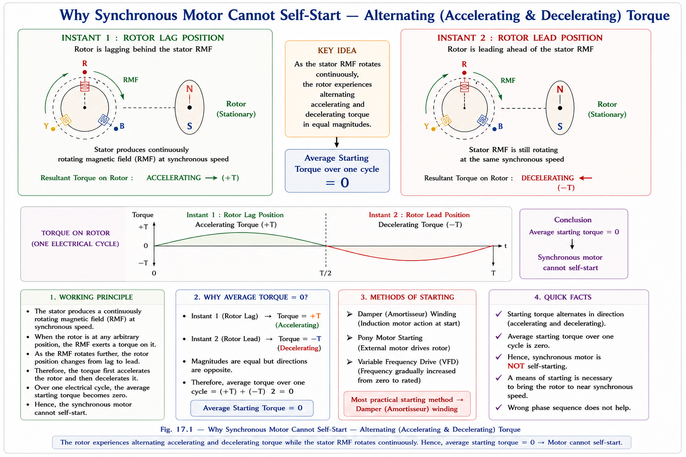
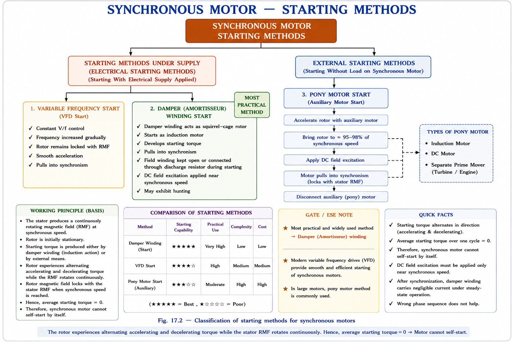
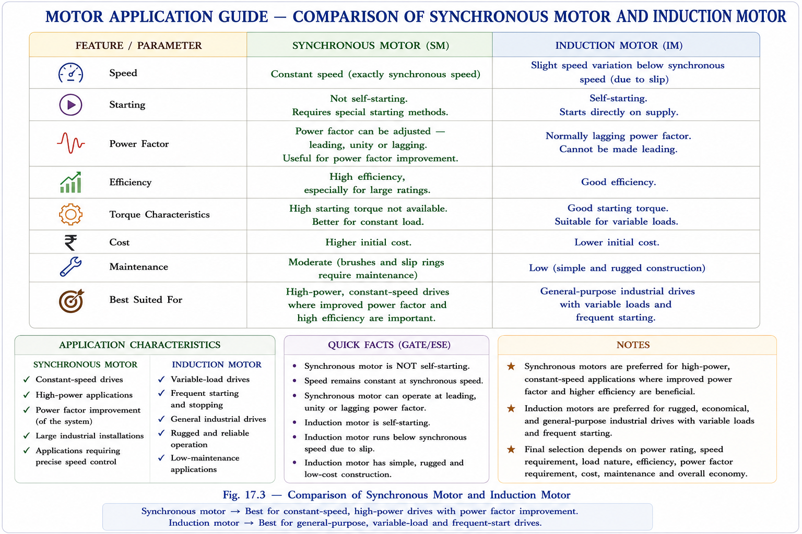
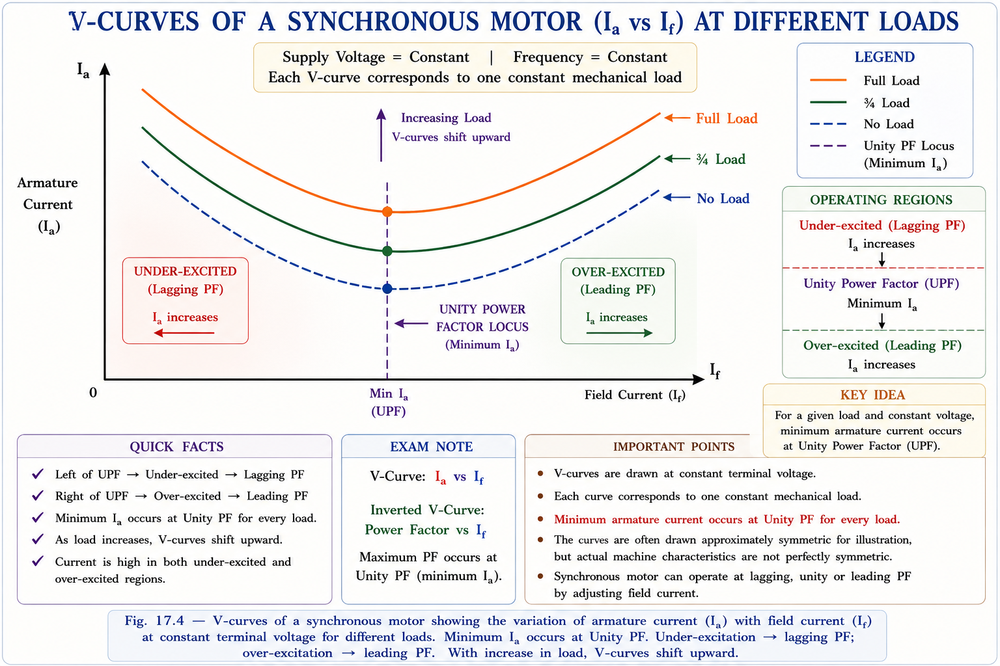
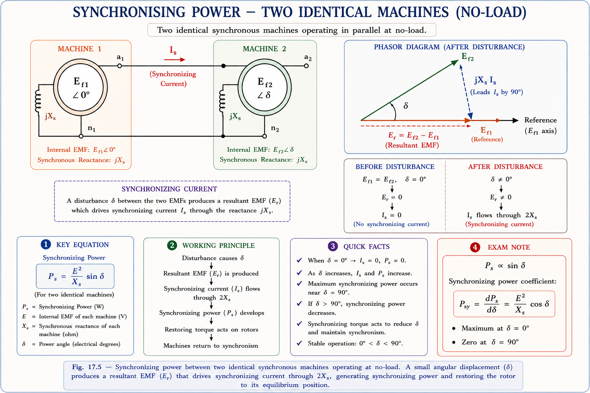
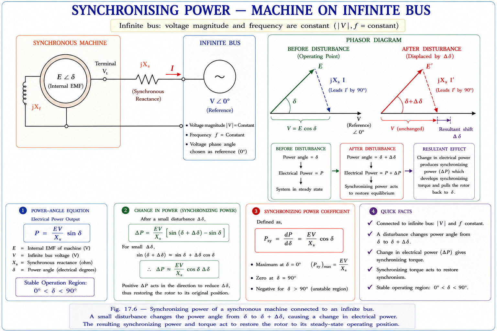
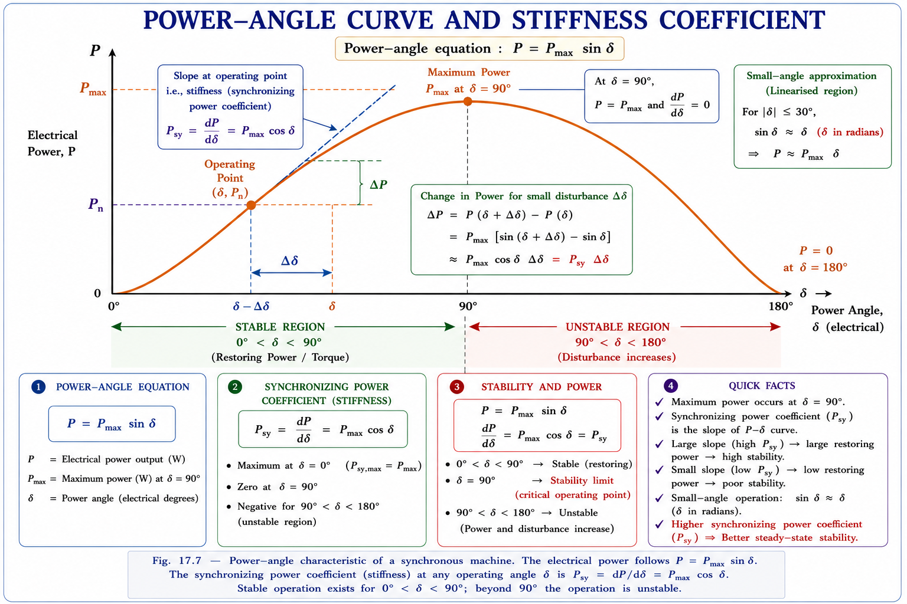
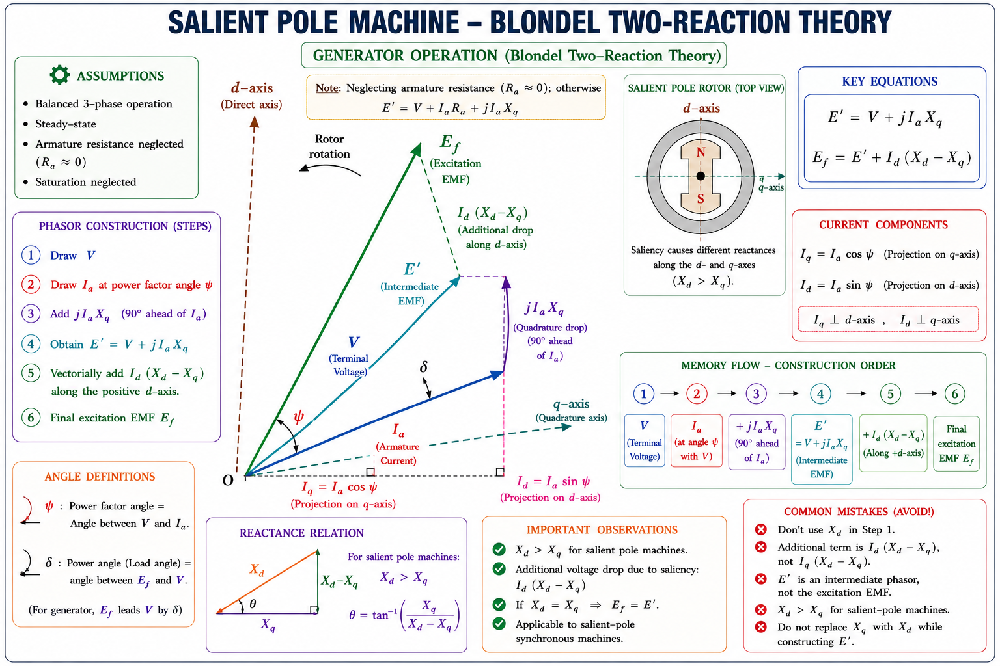
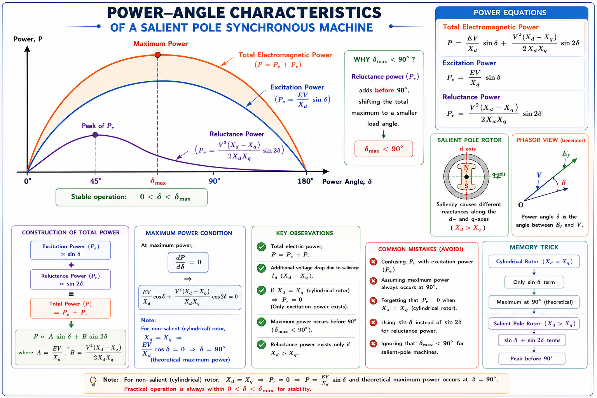

Starting methods, V-curves, power angle characteristics, synchronising power & stiffness coefficient, salient pole machines, Blondel's two-reaction theory, reluctance power — complete GATE & IES exam-ready chapter with solved numericals.
A synchronous motor operates at exactly synchronous speed — it cannot start by itself when directly connected to AC supply. This is a fundamental limitation arising from the physics of magnetic torque.[1]
When the 3-phase supply is switched on, a rotating magnetic field (RMF) is immediately set up in the stator at synchronous speed \(N_s\). However, the rotor (with its salient poles and DC field winding) is stationary due to mechanical inertia. In the first half-cycle, the stator field tries to drag the rotor in the forward direction. Before the rotor can respond, the stator field has already reversed (in the next half-cycle), now trying to pull the rotor backward. The net torque over one full cycle averages to zero. The motor therefore produces no starting torque and remains stationary.

Synchronous motor is NOT self-starting. The rotor is unable to follow the rapidly reversing stator field at 50 Hz due to rotor inertia. All starting methods aim to bring the rotor to near-synchronous speed first, after which it pulls into synchronism.
All starting methods fall into two broad categories: On-Load Start (the motor must develop torque from standstill against a load) and No-Load Start (the motor is run up to synchronous speed first, then load is applied).[2]

Copper or aluminium bars are embedded in the pole faces of the salient-pole rotor, short-circuited at both ends by end rings — exactly like a squirrel-cage induction motor rotor. When AC supply is applied (with the DC field winding open or short-circuited through a resistor), the machine acts as an induction motor and accelerates to near synchronous speed. Then DC excitation is applied and the rotor "pulls into synchronism".[2]
Once synchronised, hunting refers to oscillation of the rotor about its synchronous speed when subjected to sudden load changes. The rotor swings back and forth like a pendulum. Damper windings suppress hunting by inducing currents that create a damping torque opposing the oscillation. This is why damper windings are also called amortisseur windings.
During induction-motor starting, the DC field winding must not be left open-circuited. At standstill the stator flux cuts the field winding at line frequency (50 Hz), inducing a dangerously high voltage (could be several kV). The field winding is instead short-circuited through a discharge resistor (about 8–10 times field resistance) during starting.
A variable-frequency drive (VFD) or cycloconverter supplies the stator with very low frequency at start (e.g., 2–3 Hz), so that the RMF rotates slowly enough for the rotor to follow. As rotor speed builds up, frequency is gradually increased — keeping \(V/f = \text{constant}\) to maintain rated flux. This method is used for large synchronous motors driving compressors, fans, and pumps in industry. The resulting machine is sometimes called a synduction motor.[3]
A small auxiliary motor (either an induction motor or a DC motor) is mechanically coupled to the synchronous motor shaft and brings it up to near-synchronous speed. Then the synchronous motor is synchronised to the bus (like a synchronous generator) and the pony motor is decoupled. This method is used for no-load starting only, as the pony motor is small.
The choice between a synchronous motor (SM) and induction motor (IM) depends on the horsepower rating and speed of operation. A practical application guide is shown below.[2]

| Criterion | Synchronous Motor | Induction Motor |
|---|---|---|
| Speed range | 500 – 2000 rpm | Below 500 rpm (large poles, impractical for SM) or above 2000 rpm |
| HP range | Above 800 HP (preferred) | Below 50 HP (preferred) |
| Power factor | Can operate at leading PF — provides reactive power compensation | Always lagging PF — consumes reactive power |
| Speed constancy | Exactly constant at Ns, independent of load | Slightly below Ns (slip increases with load) |
| Speed vs voltage | Not affected by voltage variations | Highly affected — torque ∝ V² |
| Self-starting | Not self-starting | Self-starting |
| Popular type | Squirrel-cage SM (for starting + hunting damping) | Squirrel cage IM |
Synchronous motor speed is not affected by voltage variations, whereas induction motor is highly affected (torque ∝ V²). This makes SM preferred in industries where constant speed despite fluctuating supply is critical (e.g., paper mills, rubber mills, ball mills).
A synchronous motor can be made to operate at lagging, unity, or leading power factor simply by changing the DC field current \(I_f\). At a given mechanical load, if we plot armature current \(I_a\) vs field current \(I_f\), we get a V-curve (due to its characteristic V shape).[1]

When two synchronous machines are connected in parallel (or a machine is connected to an infinite bus), any disturbance that changes the power angle \(\delta\) causes a synchronising power to flow that tends to restore the original condition — bringing both machines back to synchronism.[2]
Consider two identical synchronous machines (no-load) connected in parallel. Before disturbance: \(E_{f1} = E_{f2} = E_f\). If machine 1 receives an angular disturbance \(\Delta\delta\), machine 2's EMF now leads machine 1 by \(\Delta\delta\).

The synchronising current flows through the total reactance \(2X_s\) (both machines in series). From the phasor diagram:
Since \(\Delta\delta\) is very small, \(\sin(\Delta\delta) \approx \Delta\delta\) (in electrical radians):
Due to the disturbance in machine 1:
The synchronising power coefficient \(S_p = E_f^2 / (2X_s)\) is maximum at \(\delta = 0\) (no-load condition). This is the reason it is recommended that generators are synchronised to the bus on no-load — the restoring capability is highest, and any disturbance is quickly damped.
For a large synchronous machine connected to an infinite bus (constant \(V\), constant \(f\)), the synchronising power derivation gives:[2]

For small \(\Delta\delta\): \(\sin(\Delta\delta) \approx \Delta\delta\) (electrical radians):
The synchronising power coefficient \(S_p\) (also called stiffness coefficient or synchronising coefficient) is defined as the synchronising power per electrical radian of angular displacement:[2]
A higher \(S_p\) means the machine resists angular displacement more strongly — like a stiff spring. \(S_p\) is maximum at \(\delta = 0\) (no-load) and decreases as load (power angle) increases. At \(\delta = 90°\), \(S_p = 0\) — the machine is at the stability limit and the captive power plant concept recommends operating with \(\delta \leq 30°\) for adequate safety margin.

It is recommended that synchronous machines be operated with power angle limited to 30°. In the linearised range \(-30° \leq \delta \leq +30°\), \(\sin\delta \approx \delta\) and \(P \approx P_{max} \times \delta\) (watts). A captive power plant generates power only for its own industries — it must be highly reliable, hence operates conservatively with low δ.
Step 1 — Find E_f (pu) at FL, 0.8 PF lag
Take \(V = 1.0\angle 0°\) pu, \(I_a = 1.0\angle{-36.87°}\) pu (0.8 PF lag):
\[E_f = V + jX_s I_a = 1.0\angle 0° + j(0.8)(1.0\angle{-36.87°})\]
\[E_f = 1.0 + 0.8\angle(90° - 36.87°) = 1.0 + 0.8\angle 53.13°\]
\[E_f = 1.0 + (0.48 + j0.64) = 1.48 + j0.64 = 1.6125\angle 23.38°\] pu
Step 2 — Synchronising Power Coefficient (pu)
\[S_p = \frac{E_f V}{X_s}\cos\delta\bigg|_{\delta=23.38°} = \frac{1.6125 \times 1}{0.8}\cos(23.38°) = 1.836 \text{ pu}\]
Step 3 — Convert to kW/elect. rad
Base power = 1000 kVA:
\[S_p = 1.836 \times 1000 = 1836 \text{ kW/elect. rad}\]
Step 4 — Convert to kW/elect. degree:
\[S_p = 1836 \times \frac{\pi}{180} = 32.07 \text{ kW/elect. }°\]
Step 5 — Convert to kW/mech. degree (8-pole machine, \(P=8\)):
\[S_p \text{ (mech)} = 32.07 \times \frac{P}{2} = 32.07 \times 4 = 128.3 \text{ kW/mech. }°\]
Step 6 — Synchronising Torque Coefficient: \(\omega_{sm} = \frac{2}{P} \times 2\pi f = \frac{2}{8} \times 2\pi \times 50\)
\[T_{sync} = \frac{S_p(\text{mech})}{\omega_{sm}} = \frac{128.3 \times 10^3}{(2/8)\times 2\pi\times 50} = 1628 \text{ N·m/mech. }°\]
At UPF (\(I_a = 10 A\), \(\phi = 0°\)):
\[V_\phi = \frac{230}{\sqrt{3}} = 132.8 \text{ V (L-N)}\]
\[E_f = V_\phi\angle 0° - I_a(R_a + jX_s) = 132.8\angle 0° - 10\angle 0° \times (0.6+j3)\]
\[E_f = 132.8 - 6 - j30 = 126.8 - j30 = 130.29\angle{-13.31°} \text{ V (L-N)}\]
Field current unchanged → \(|E_f| = 130.29\) V (constant).
When load increases to 40 A:
Let new power factor angle = \(\phi_2\), then \(I_a = 40\angle{-\phi_2}\):
\[E_f = 132.8\angle 0° - 40\angle{-\phi_2}\times(0.6+j3)\]
Impedance magnitude: \(|Z_s| = \sqrt{0.6^2+3^2} = 3.06\,\Omega\), angle = \(\tan^{-1}(3/0.6) = 78.69°\)
\[130.29\angle{-\delta_2} = 132.8 - 40\times 3.06\angle(78.69°-\phi_2)\]
Squaring and equating magnitudes:
\[\cos(78.69°-\phi_2) = 0.4811 \implies 78.69° - \phi_2 = 61.24° \implies \phi_2 = 17.45°\]
\[\boxed{\text{New PF} = \cos(17.45°) = 0.954 \text{ lagging}}\]
Power developed:
\[P_{dev} = \sqrt{3}\times 230 \times 40 \times 0.954 - 3\times 40^2\times 0.6 = 15233.7 - 2880 = 12321.86 \text{ W}\]
Torque developed:
\[\omega_{sm} = \frac{2}{P}\times 2\pi f = \frac{2}{4}\times 2\pi\times 50 = 157.08 \text{ rad/s}\]
\[T_{dev} = \frac{P_{dev}}{\omega_{sm}} = \frac{12321.86}{157.08} = \boxed{78.44 \text{ N·m}}\]
Load apparent power:
\[\vec{S}_{load} = \sqrt{3}\times 220 \times 50\angle\cos^{-1}(0.707) = 19.053\angle 45°\text{ kVA} = (13.47 + j13.47)\text{ kVA}\]
Motor E_f from power equation:
\[P = \frac{VE_f}{X_s}\sin\delta \implies 33\times 10^3 = \frac{220\times E_f}{1.27}\sin 30°\]
\[E_f = \frac{33000\times 1.27}{220\times 0.5} = \boxed{381 \text{ V (L-L)}}\]
Motor reactive power:
\[Q_{motor} = \frac{V}{X_s}(V - E_f\cos\delta) = \frac{220}{1.27}(220 - 381\cos 30°) = -19.047\text{ kVAR (leading)}\]
\[\vec{S}_{motor} = (33 - j19.047)\text{ kVA}\]
Overall \(\vec{S}_{in}\):
\[\vec{S}_{in} = \vec{S}_{load} + \vec{S}_{motor} = (13.47+33) + j(13.47-19.047) = 46.47 - j5.577\]
\[|\vec{S}_{in}| = 46.806 \text{ kVA},\quad \angle = -6.84°\]
\[\boxed{\text{Overall PF} = \cos(6.84°) = 0.9929 \text{ leading}}\]
The analysis of a cylindrical rotor synchronous machine uses a single synchronous reactance \(X_s\). This is valid because the air-gap is uniform and the machine has the same reluctance in all directions. A salient pole machine has projecting poles — the air-gap is non-uniform, and the reluctance is different along the d-axis and q-axis. Blondel's two-reaction theory accounts for this by resolving armature current and flux into two components.[2]
In a salient-pole machine, two magnetic axes are defined:

The power delivered per phase for a salient pole machine has two components:
The second term \(\frac{V^2}{2}\sin 2\delta\left(\frac{1}{X_q}-\frac{1}{X_d}\right)\) is called reluctance power or saliency power. It exists even when \(E_f = 0\) (no field excitation) because the salient pole geometry itself creates a torque due to the tendency of the rotor to align with the stator field along the d-axis. This is exploited in reluctance motors.
Maximum power in a salient pole machine occurs at \(\delta < 90°\) (unlike cylindrical rotor where max power is at exactly \(\delta = 90°\)).

Explanation: At standstill the stator RMF (rotating at synchronous speed) alternately exerts forward and backward torque on the stationary rotor. The net torque averaged over one AC cycle = 0. Hence the motor does not start on its own.
Explanation: Under-excitation means \(E_f < V\). The machine behaves like an inductor, absorbing reactive power — hence lagging PF. Since the machine must draw more current to meet the reactive demand, \(I_a\) is larger. (Minimum \(I_a\) occurs at unity PF on the V-curve.)
Explanation: Increasing field current → over-excitation → \(E_f\) increases → \(I_a\) increases (moves up the V-curve) and PF becomes more leading. Speed is always fixed at synchronous speed regardless of excitation.
Explanation: \(S_p = P_{max}\cos\delta\) — this is maximum when \(\cos\delta\) is maximum, i.e., at \(\delta = 0\) (no-load). This is why generators are synchronised on no-load for maximum restoring capability.
Explanation: In a salient pole machine, the d-axis has minimum air-gap (along pole axis) → minimum reluctance → maximum flux → maximum reactance (\(X_d\)). The q-axis (between poles) has maximum air-gap → maximum reluctance → minimum reactance (\(X_q\)). So \(X_d > X_q\) always. Typical ratio: \(X_q = 0.6\text{ to }0.7\,X_d\).
Explanation: Damper (amortisseur) windings serve a dual purpose: (1) They allow the SM to start as an induction motor, providing starting torque. (2) Once synchronised, any oscillation (hunting) induces currents in the damper bars that produce a torque opposing the oscillation — damping it. They do not improve PF or reduce armature reaction.
Have a doubt about synchronous motors? Ask anything — starting methods, V-curves, synchronising power, or salient pole theory.
SM is not self-starting. Stator RMF rotates at \(N_s\) but inert rotor cannot follow. Net torque per AC cycle = 0. Must be brought to near-\(N_s\) first.
Damper winding (squirrel cage start), Variable frequency (V/f = const), Pony motor (IM or DC). Damper also suppresses hunting after synchronisation.
Under-excited: lagging PF, high \(I_a\). Over-excited: leading PF, high \(I_a\). Minimum \(I_a\) at Unity PF. Over-excited SM = synchronous condenser for PF correction.
\(P_s = \Delta P = \frac{VE_f}{X_s}\cos\delta\cdot\Delta\delta\). Restores machine to synchronism after disturbance. Two machines: \(P_s = \frac{E_f^2}{2X_s}\cdot\Delta\delta\).
\(S_p = \frac{dP}{d\delta} = P_{max}\cos\delta\). Maximum at \(\delta = 0\) (no-load). Recommended operating angle \(\leq 30°\) for safe margin.
\(X_d > X_q\). Power = Excitation power + Reluctance power. Locate q-axis via \(E' = V + jI_aX_q\). Reluctance power = \(\frac{V^2}{2}\sin 2\delta\left(\frac{1}{X_q}-\frac{1}{X_d}\right)\).
All technical content is derived from the following standard textbooks. No content is reproduced verbatim — all explanations, examples, numerical values, and diagrams are original to Aarova AI.